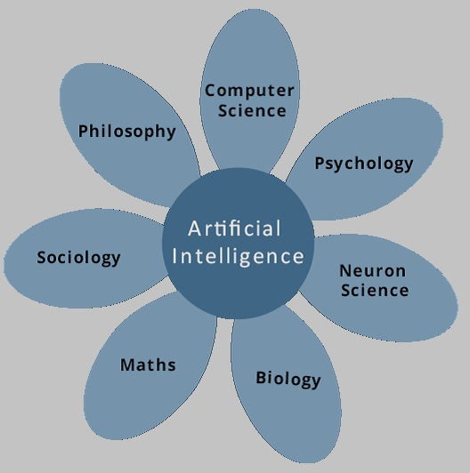

Artificial Intelligence (AI) has been studied for decades and is still one of the most elusive subjects in Computer Science. This partly due to how large and nebulous the subject is. AI ranges from machines truly capable of thinking to search algorithms used to play board games. It has applications in nearly every way we use computers in society.
Since the invention of computers or machines, their capability to perform various tasks went on growing exponentially. Humans have developed the power of computer systems in terms of their diverse working domains, their increasing speed, and reducing size with respect to time. A branch of Computer Science named Artificial Intelligence pursues creating the computers or machines as intelligent as human beings.
While exploiting the power of the computer systems, the curiosity of human, lead him to wonder, “Can a machine think and behave like humans do?”
Thus, the development of AI started with the intention of creating similar intelligence in machines that we find and regard high in humans.
Artificial intelligence is a science and technology based on disciplines such as Computer Science, Biology, Psychology, Linguistics, Mathematics, and Engineering. A major thrust of AI is in the development of computer functions associated with human intelligence, such as reasoning, learning, and problem solving.
Out of the areas shown in the following photo, one or multiple areas can contribute to build an intelligent system.
